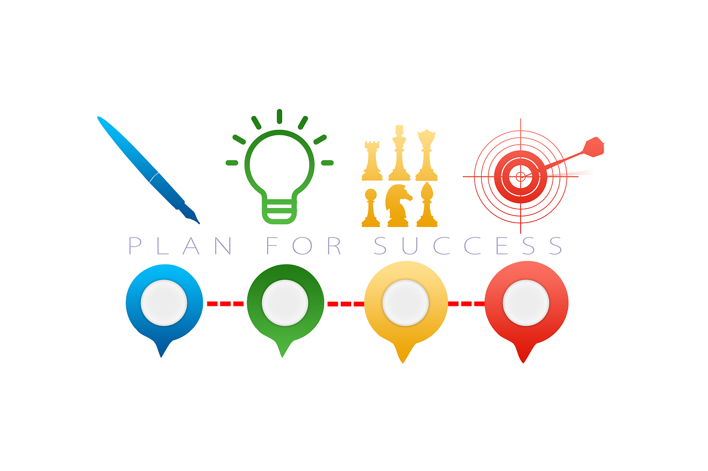

Sviluppo di una pagina web per il download dei report di sostenibilità di un’impresa del settore terziario
RESPONSABILITÀ VERSO L'AMBIENTE
Proteggere l’ambiente, attraverso l’analisi, la valutazione e la gestione dei rischi in ottica di prevenzione degli impatti e di valorizzazione delle opportunità
IMPEGNO PER IL FUTURO
Impegnarsi a mitigare gli effetti del crescente deterioramento dell’ambiente e del cambiamento climatico tenendo conto del loro impatto sociale
FISSARE GLI OBIETTIVI
Fissare obiettivi per assicurare e misurare le azioni volte ad evitare, mitigare o ridurre l'impatto sugli ecosistemi terrestri e acquatici, mettendo a disposizione le risorse necessarie ed
aggiornando gli obiettivi in ottica di miglioramento continuo dei processi e delle prestazioni

RISPETTARE GLI OBBLIGHI E GLI IMPEGNI
Rispettare gli obblighi normativi e gli impegni volontari, garantendo che le attività operative siano eseguite in conformità alla disciplina legislativa e regolamentare dei diversi Paesi